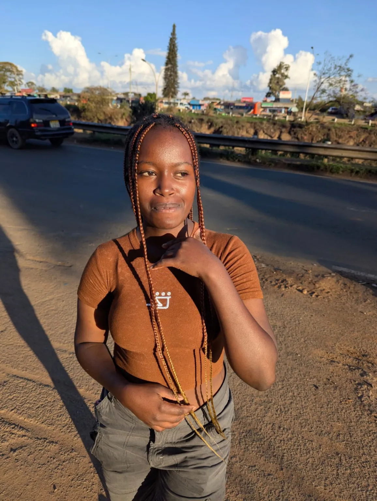

Welcome to my portfolio
Hello, I'm Ivy Njoki Wainaina
I am a second-year Fisheries and Aquaculture student at Jomo Kenyatta University of Agriculture and Technology (JKUAT). I enjoy learning, discovering technology and building new experiences.
Explore my academic journey
A little about me
Welcome to my personal portfolio. This website introduces my academic journey, interests, favourite films and music. It is a place to share what I am learning and the activities I enjoy.
Fisheries & AquacultureTechnologyLearning